Deep1454 / README.md

A little about me
I'm Deep, a developer who enjoys connecting the whole picture: an interface people can use, the APIs behind it, and the data that makes it work.
My projects span Java microservices, JavaScript and TypeScript web apps, and React Native mobile experiences. I also explore data analysis through Python notebooks.
Make it useful. Understand how it works. Keep improving it.
01 / Selected work
A few projects that show the different things I like to build. Select a card to explore the code.
More to explore: Real-time Chat · Travelometer · Data Analysis Notebook
02 / My toolkit
JSTSReactAngularNode.jsExpressJavaSpringGraphQLMongoDBPostgreSQLDocker
| Area | Technologies used across my projects |
|---|---|
| Web & mobile | React · Angular · React Native · Expo · HTML · CSS |
| APIs & services | Node.js · Express · Java · Spring Boot · GraphQL · Socket.IO |
| Data & persistence | MongoDB · PostgreSQL · SQL Server · Python · Jupyter |
| Architecture & tooling | Microservices · Kafka · Docker · Keycloak · Git |
▸ See the stack in action
03 / Let's build something useful
Interested in web apps, mobile development, backend systems or a project we could build together? Explore my repositories and connect with me on GitHub.